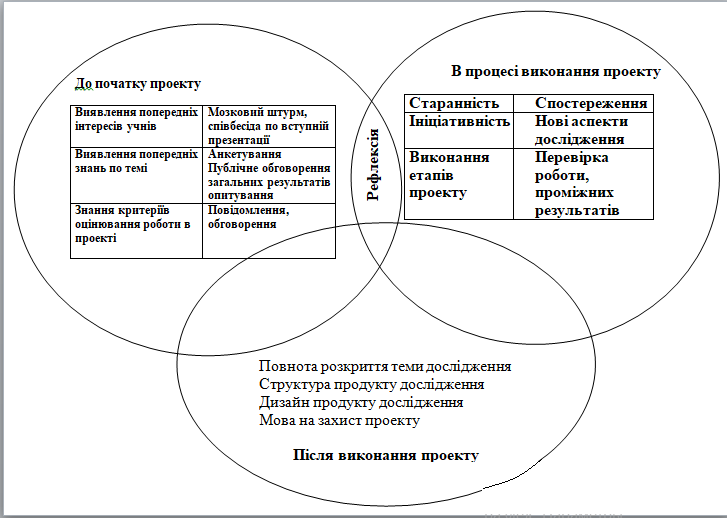
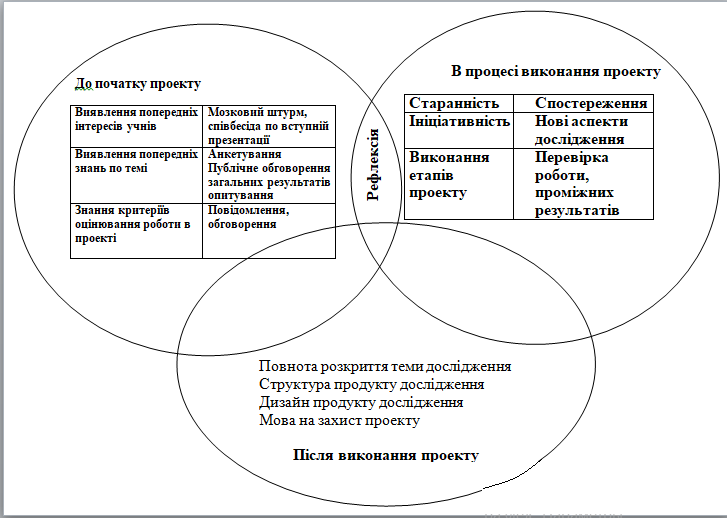
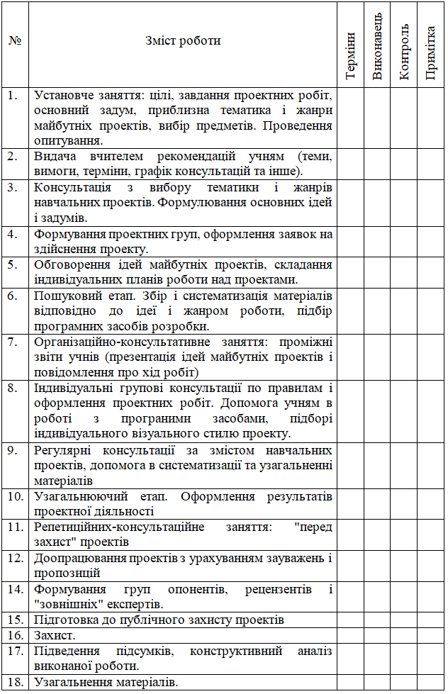

Зміст
Проведені проекти
Проект для учнів 6-го класу по темі "Подільність натуральних чисел"
Тип проекту – інформаційний, практико-орієнтований.
Середня тривалість – 1-2 місяці.
Мета проекту - створення умов для поглиблення і систематизації знань по темі "Подільність натуральних чисел".
Завдання проекту:
– вивчити історичні відомості з даної теми
– систематизувати визначення і правила
– систематизувати завдання по даній темі
Проведена робота в цілому сприятиме розвитку таких компетенцій :
- Комунікативної, володіння усним мовленням ( діалогом, полілогом, умінням поставити запитання, привести довід при усній відповіді, захисту проекту), вміння представити себе усно і письмово, володіння прийомами оформлення тексту (електронним листуванням, правилами подачі даних в презентації ). Уміння працювати в групі, шукати і знаходити компроміси.
- Інформаційної компетенції, що передбачає володіння наступними знаннями, вміннями, навичками:
- Способами роботи з даними ( пошук в каталогах, пошукових системах; вилучення даних з різних носіїв; систематизація, аналіз та відбір даних; технічні навички збереження, видалення, копіювання даних; перетворення даних.
- Володіння навичками роботи з різними пристроями інформації.
- Критичне ставлення до одержуваної інформації, вміння виділяти головне, оцінювати ступінь достовірності. Уміння застосовувати інформаційні та телекомунікаційні технології для вирішення навчальних завдань з інших предметів.
- виявити рівень сформованості ключових компетентностей учнів 6 класу на початку року;
- розробити компетентнісно-орієнтовані завдання в курсі вивчення математики та інформатики спрямовані на формування і розвиток інформаційної, комунікативної компетенції учнів даного віку;
- розглянути можливість застосування системи компетентнісно-орієнтованих завдань для проведень моніторингу сформованості ключових компетентностей учнів на уроках математики;
- узагальнити отриманий досвід, провести аналіз досягнутих результатів;
Ресурси : https://www.pidruchnyk.ua/
– на сайті Підручник.ком.юа зібрані шкільні підручники для учнів молодших класів, а також для старшокласників. Учні можуть в ознайомлювальних цілях абсолютно безкоштовно переглянути онлайн підручник з будь якого шкільного предмету.
Засоби : https://www.google.com/intl/ru_uA/slides/about/
– Завдяки Google презентації можливо створювати презентації, редагувати їх і працювати над ними разом з колегами - де завгодно і коли завгодно; MS Word.
Діяльність вчителя
Анкетування
- Чи знайомі ви з поняттям «проектна діяльність»?
- Чи знайомі ви з поняттям «міждисциплінарні проекти»?
- Які типи проектів вам знайомі?
- Які предмети вам найбільш цікаво вивчати?
- Яка область людських знань вам найбільш цікава?
- Яка з наукових проблем сучасності вам видається найактуальнішою (значущою)?
- Чи хотіли б ви брати участь в дослідженні будь-якої проблеми ?
- Роботу з якими програмними засобами ви б хотіли освоїти/поглибити на уроці інформатики?
- Чи є у вас нереалізовані учбові ідеї, проекти, задуми? Які саме?
- Проект на яку тему ви б хотіли реалізувати?
- Ви хочете займатися проектною діяльністю у зв’язку з… (підкреслити) :
– одержанням нових знань;
– можливістю виявити власні здібності;
– метою уточнення професійного вибору? - Хто з учителів школи міг би стати вашим консультантом, порадником при організації та проведенні проекту?
- Хотіли б ви залучити до своєї роботи батьків? (так / ні)
Вступна презентація
Завдання та контрольній список прогресу учнів
Оцінювання роботи учасників проекту
 
Календар роботи над міждисциплінарним проектом.
Роботи учнів
Подільність чисел
Висновки Протягом підліткового віку відбувається бурхливий, стрімкий розвиток особистості. Прагнення до самостійності, незалежності, творчості проявляється найбільш яскраво. Всіх підлітків привертає активна, вільна, рівноправна позиція в навчальному процесі. Діти відзначають, що проект цікавий саме тому, що виконується самостійно, лише з невеликою допомогою вчителя, форми і види презентацій залежать повністю тільки від їх власної фантазії.
На питання "Чому вдалося навчитися в ході роботи над проектом?" Діти частіше відповідають:
• доробляти все до кінця
• розподіляти правильно час
• представляти результати своєї праці
• розподіляти роботу в групі.
Як показала практика, учні відчувають труднощі на етапі експертизи проекту, не володіють прийомами оцінки діяльності товаришів у процесі захисту проекту. Іноді спрацьовують суб’єктивні фактори оцінювання. Основною помилкою при проведенні проекту була спроба синхронізувати роботу груп дітей, постійно переривати їх роботу і повідомляти, що насамперед їм слід робити далі. При правильно підготовленому проекті кожен учень або група загалом виконує своє персональне завдання в своєму, індивідуальному ритмі. При цьому не так вже й страшно, що одні учні зроблять більше, а інші менше, важливо лише, щоб кожен учень працював на повну силу і отримував від цього задоволення. Завдання ж вчителя – прокреслити передбачувану освітню траєкторію проекту, за логікою якої будуть вирішуватися освітні завдання, а також адекватно (і прозоро для учнів) оцінити діяльність кожної групи, кожного учня.